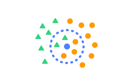
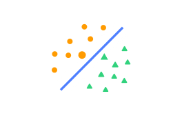
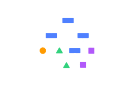

AI 모델 > 분류 - 숫자 모델
I. 분류 - 숫자 모델 공통 블록
1. 모델 다시 학습하기
모델을 다시 학습합니다.
모델 설정을 변경하거나 입력 데이터가 되는 테이블의 내용을 수정했다면, 변경된 내용을 바탕으로 모델을 다시 학습합니다.
2. 모델이 학습되었는가?
모델의 학습 상태를 가져오는 판단 블록입니다.
모델이 학습되었다면 ‘참’을, 학습 중이거나 학습되지 않았다면 ‘거짓’으로 판단합니다.
3. 모델 [보이기]
모델의 학습 상태를 표시하는 창을 실행 화면에 보이게 하거나 숨깁니다.
목록 상자( )를 클릭해서 보이기/숨기기를 선택할 수 있어요.
)를 클릭해서 보이기/숨기기를 선택할 수 있어요.
4. 핵심 속성1 (10) 핵심 속성2 (10) 의 분류 결과
핵심 속성의 값을 직접 입력해 모델이 분류한 클래스를 가져오는 값 블록입니다.
값은 모델의 클래스 이름(텍스트)으로 표현됩니다.
‘핵심 속성1’, ‘핵심 속성2’ 등은 모델 학습 시 선택한 속성 이름으로 표시되며, 설정한 핵심 속성의 개수에 따라 값 블록을 결합할 수 있는 개수도 함께 늘어납니다.
5. 핵심 속성1 (10) 핵심 속성2 (10) 의 분류 결과가 [클래스1] 인가?
핵심 속성의 값을 직접 입력해 분류 결과가 선택한 클래스인 경우 ‘참’을 가져오는 판단 블록입니다.
‘핵심 속성1’, ‘핵심 속성2’ 등은 모델 학습 시 선택한 속성 이름으로 표시되며, 설정한 핵심 속성의 개수에 따라 값 블록을 결합할 수 있는 개수도 함께 늘어납니다.
목록 상자( )를 클릭해서 클래스를 선택할 수 있어요.
)를 클릭해서 클래스를 선택할 수 있어요.

II. 최근접 이웃(kNN) 알고리즘
테이블의 숫자 데이터를 가장 가까운 이웃(k개)을 기준으로 각각의 클래스로 분류하는 모델을 학습합니다.
1. 모델 차트 창 [열기]
모델을 학습할 때 입력한 데이터와 모델이 분류한 클래스를 2차원 좌표평면에 나타낸 차트 창을 열거나 닫습니다.
핵심 속성이 3개 이상인 경우 모델의 차트를 2차원 좌표평면 위에 그릴 수 없기 때문에, 이 블록은 표시되지 않습니다.
목록 상자( )를 클릭해서 열기/닫기를 선택할 수 있어요.
)를 클릭해서 열기/닫기를 선택할 수 있어요.
2. 이웃을 (10) 개로 바꾸기
이웃 개수를 입력한 값으로 바꾸어 설정합니다.
변경한 이웃 개수는 ‘모델 다시 학습하기’ 블록으로 모델을 다시 학습할 때부터 적용됩니다.
3. 핵심 속성1 (10) 핵심 속성2 (10) [클래스1] 에 대한 [이웃 개수]
핵심 속성의 값을 직접 입력해 선택한 클래스에 대한 이웃 개수를 가져오는 값 블록입니다.
이 때 가져오는 값은 숫자로 표현됩니다.
‘핵심 속성1’, ‘핵심 속성2’ 등은 모델 학습 시 선택한 속성 이름으로 표시되며, 설정한 핵심 속성의 개수에 따라 값 블록을 결합할 수 있는 개수도 함께 늘어납니다.
목록 상자( )를 클릭해서 클래스를 선택할 수 있어요.
)를 클릭해서 클래스를 선택할 수 있어요.
클래스
클래스 속성의 모든 항목

III. 로지스틱 회귀 알고리즘
테이블의 숫자 데이터를 로지스틱 회귀 알고리즘을 활용해 각각의 클래스로 분류하는 모델을 학습합니다.
1. 학습 조건 [학습률] 을(를) (10) (으)로 바꾸기
모델의 학습 조건을 변경합니다.
변경한 학습 조건은 ‘모델 다시 학습하기’ 블록으로 모델을 다시 학습할 때부터 적용됩니다.
학습 조건
학습률,에포크,검증 데이터 비율
2. 최적화 알고리즘을 [Adam] 으(로) 바꾸기
모델의 최적화 알고리즘을 변경합니다.
변경한 최적화 알고리즘은 ‘모델 다시 학습하기’ 블록으로 모델을 다시 학습할 때부터 적용됩니다.
3. 핵심 속성1 (10) 핵심 속성2 (10) 의 [클래스1] 에 대한 확률
입력한 데이터의 선택한 클래스에 대한 확률을 가져오는 값 블록입니다.
이 때 가져오는 값은 숫자로 표현됩니다.
4. 모델의 [정확도]
모델의 성능 평가 지표 값을 가져오는 값 블록입니다.
성능 평가 지표
정확도,F1,정밀도,재현율

IV. 서포트 벡터 머신(SVM) 알고리즘
테이블의 숫자 데이터를 서포트 벡터 머신 알고리즘을 활용해 각각의 클래스로 분류하는 모델을 학습합니다.
1. 학습 조건 [C] 을(를) (0.00001) (으)로 바꾸기
모델의 학습 조건을 변경합니다.
변경한 학습 조건은 ‘모델 다시 학습하기’ 블록으로 모델을 다시 학습할 때부터 적용됩니다.
학습 조건
C
2. 커널을 선형으로 바꾸기
학습 조건 중 커널을 선형으로 변경합니다.
변경한 학습 조건은 ‘모델 다시 학습하기’ 블록으로 모델을 다시 학습할 때부터 적용됩니다.
3. 커널을 [다항식] (으)로 바꾸고 [차수] 를 (3) (으)로 정하기
학습 조건 중 커널을 다항식 또는 RBF로 변경합니다.
커널을 다항식으로 선택하면 차수를, RBF로 선택하면 감마 값을 설정할 수 있습니다.
변경한 학습 조건은 ‘모델 다시 학습하기’ 블록으로 모델을 다시 학습할 때부터 적용됩니다.
4. 모델의 [정확도]

모델의 성능 평가 지표 값을 가져오는 값 블록입니다.
성능 평가 지표
정확도,F1,정밀도,재현율

V. 결정 트리 알고리즘
테이블의 숫자 데이터를 결정 트리 알고리즘을 활용해 각각의 클래스로 분류하는 모델을 학습합니다.
1. 학습 조건 [트리의 최대 깊이] 을(를) (10) (으)로 바꾸기
모델의 학습 조건을 변경합니다.
변경한 학습 조건은 ‘모델 다시 학습하기’ 블록으로 모델을 다시 학습할 때부터 적용됩니다.
학습 조건
트리의 최대 깊이,단말 노드의 최소 데이터 수
2. 학습한 트리 [열기]
학습한 트리를 나타낸 창을 열거나 닫습니다.
3. 모델의 [정확도]
모델의 성능 평가 지표 값을 가져오는 값 블록입니다.
성능 평가 지표
정확도,F1,정밀도,재현율